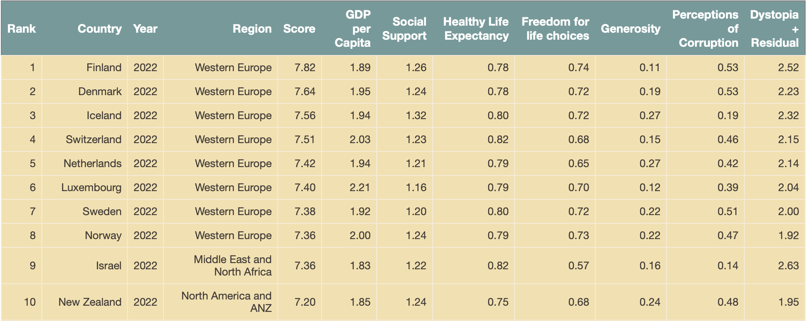
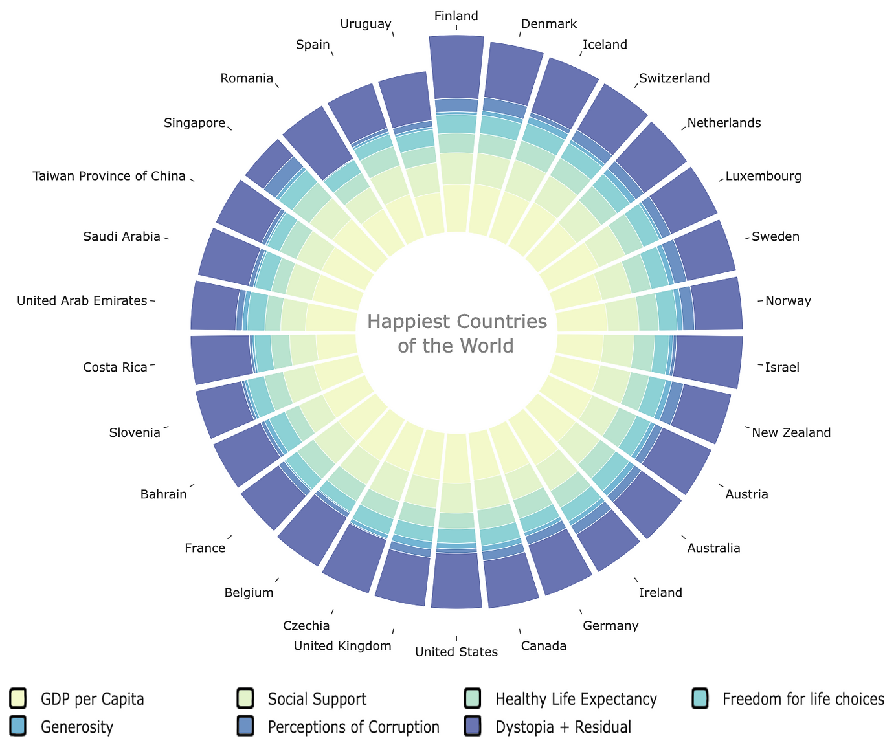
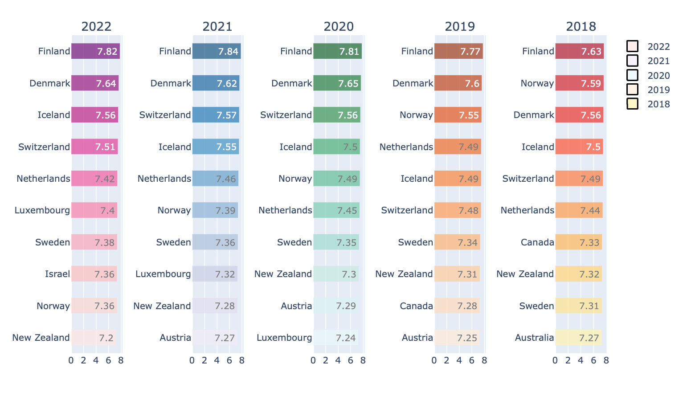
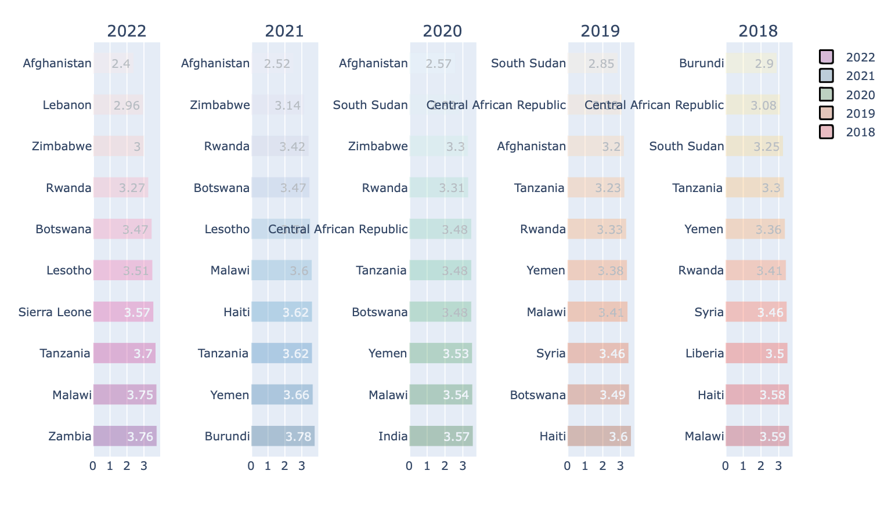
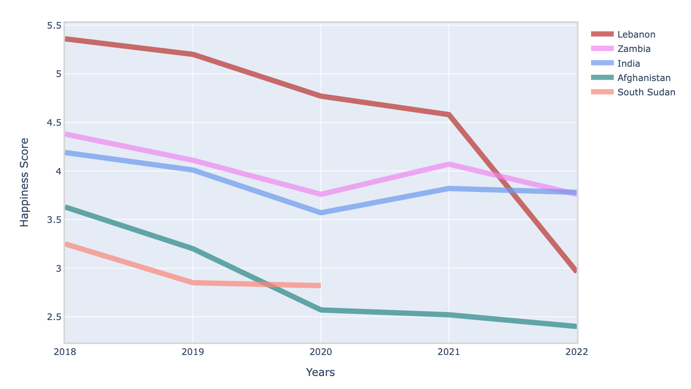
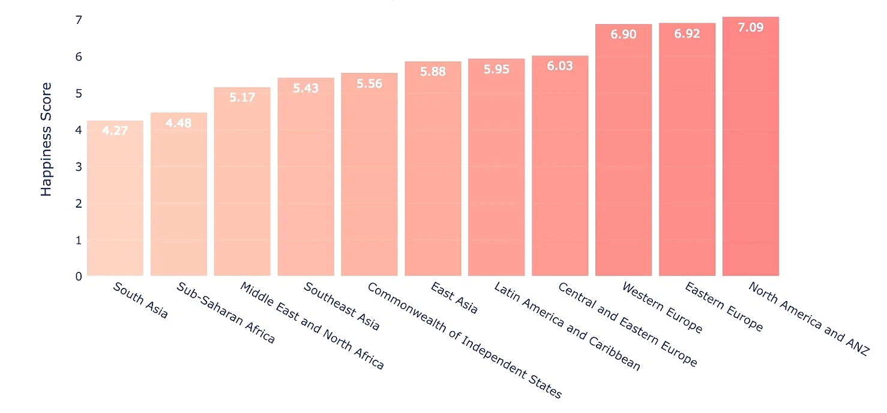
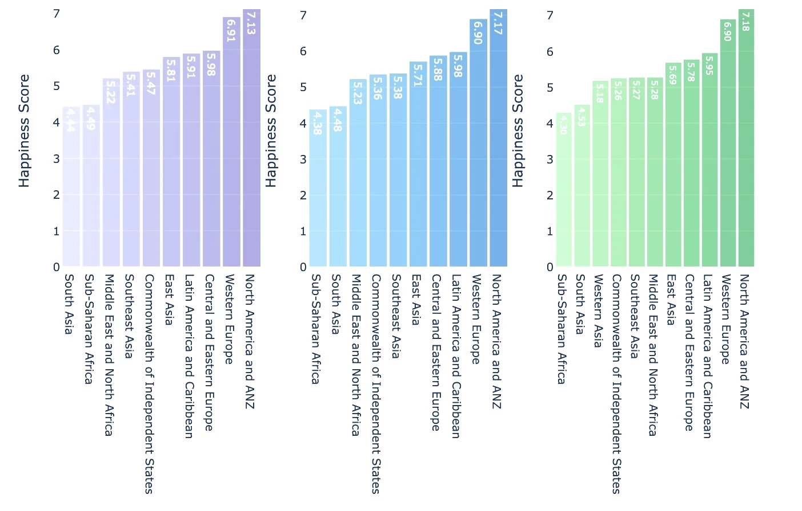
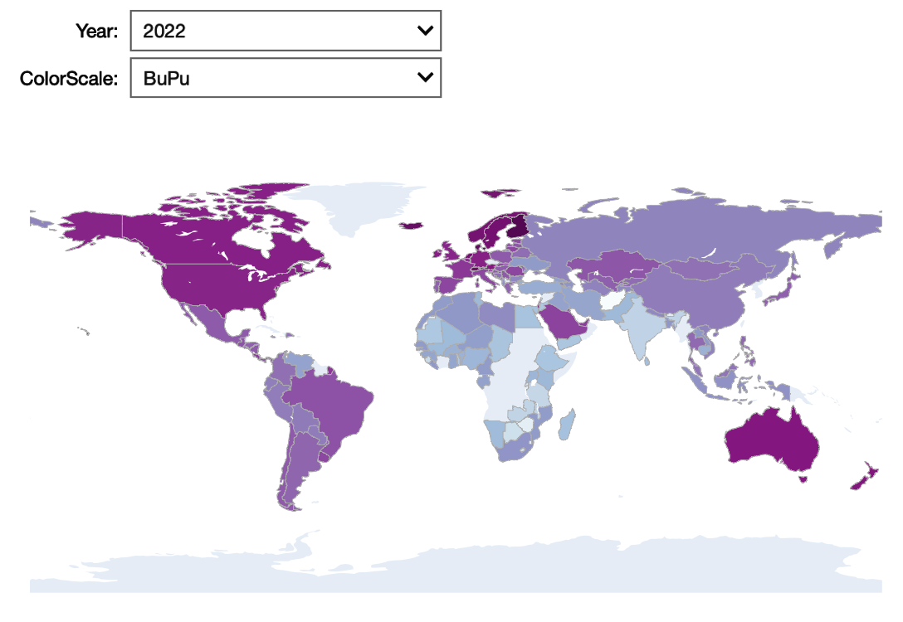

World Happiness Report Analysis
Project Context
-
Goal
The World Happiness Report is a yearly publication that provides an overview of global happiness levels and the factors that contribute to happiness. In this report, my goal is to conduct a visual analysis of the World Happiness Report from 2018 to 2022. My aim is to identify any trends or changes in the happiness levels across countries and explore the factors that contribute to happiness.
-
Result
I used data from the World Happiness Report for the years 2018 to 2022. I analyzed the data using various visual tools, including line charts, scatter plots, bar charts, and maps. I also examined the correlations between happiness score and other 7 key factors such as GDP, social support, and freedom for life choices.
Role
Data Analyst
Time
3 weeks
Tool
- Python
- Jupyter Notebook
Data
-
Key Mockups
After collecting, processing, wrangling, cleaning, and combing data from year 2018 to 2022 into one data frame 12 columns and 760 data entires. Here is the final look of the data frame.
- 
EDA
-
Top 30 Happy Countries
- 
-
Plot above showing top 30 happy countries around the world based on seven key factors. From the plot we see GDP per capita, social support, and Dystopia + Residual has more impact on happiness score compare to other factors.
-
Happiness Score vs 7 key Factors
- 
-
From above I found that there is a strong positive correlation between GDP and happiness levels, indicating that wealthier countries tend to be happier.
Another factor that strongly influences happiness levels is social support. Countries with stronger social support systems tend to have higher happiness levels. We also found that freedom and generosity are significant contributors to happiness levels, with countries that score high in these areas ranking higher in happiness levels.
On the other hand, Generosity, Perceptions of Corruption does not have strong correlations with Happiness Score.
-
Year by Year Comparison
- 
-
It is clear from the above plots, Nordic countries are clearly happier than the rest of the world where Finland is the happiest country of the World, Denmark holds the second place for the last four years, and Iceland, Switzerland are closely competing for the third place
- 
-
From the above plots we see, Afghanistan is the most unhappy country in the last three years(2022,2021,2020), Followed by Lebanon, Zimbabwe, Rwanda in 2022, South Sudan was in top three until 2020 then not in top for 2021 and 2022.
India(2020), Lebanon(2022), and Zambia(2022) appeared only once in the bottom list.
Now I will investigate further to see how the happiness score have changed over the years for few selected countries to find any pattern.
- 
-
From the above plot, It is evident that there has been a sudden decline in Lebanon's happiness score in 2022. India and Zambia, on the other hand, seem to be following a usual trend with no major fluctuations in their rankings. It is not unexpected for Afghanistan to be positioned at the bottom of the list given the prevailing political and economic situation in the country. Notably, South Sudan did not feature in the bottom ten rankings for both 2021 and 2022, likely because there was no available data for the country.
-
Comparison by Regions
- 
- 
-
Based on the above plots, it is clear that North America, Australia, and New Zealand have consistently been the happiest regions of the world for the past four years, from 2019 to 2022. These regions have shown a higher level of well-being, social support, and economic stability. In contrast, South Asia and Sub-Saharan Africa have been in a close contest for the lowest position in the rankings, indicating challenges related to poverty, political instability, and inadequate access to basic resources. These findings highlight the need for continued efforts to improve the quality of life for people living in these regions, and to address the underlying factors that contribute to happiness and well-being.
-
Happiness Score Around the World
After collecting, processing, wrangling, cleaning, and combing data from year 2018 to 2022 into one data frame 12 columns and 760 data entires. Here is the final look of the data frame
- 
-
Conclusion
In conclusion, the world happiness report from 2018 to 2022 indicates a slight decline in overall happiness levels, with the impact of COVID-19 being a significant contributing factor. Regional trends have remained relatively stable, with the Nordic countries continuing to top the list for the happiest countries in the world. GDP, social support, freedom, and healthy life expectancy are the main contributors to happiness levels, and countries that score high in these areas tend to rank higher in happiness levels.